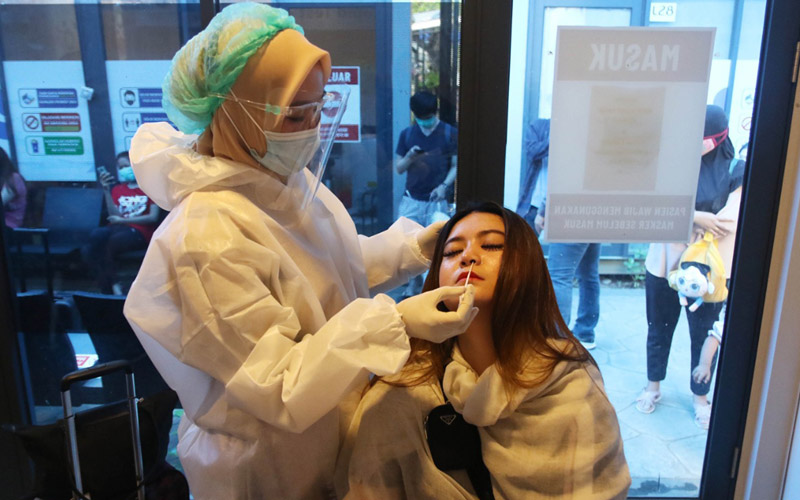

Tes Antibodi(Tes Darah)

Tes ini digunakan untuk mencari reaksi antibodi terhadap virus corona. Jenis tes ini hanya mendeteksi apakah kita pernah terjangkit infeksi di masa lalu. Jenis test ini tidak disarankan untuk mendeteksi virus Covid-19 pada pasien yang mengalami gejala yang muncul minimal dalam waktu 14 hari.
Tes Antigen(Rapid Test)

Jenis tes yang hasilnya dapat didapatkan dalam hitungan menit dengan biaya yang murah. Namun, tingkat akurasi test ini sangat rendah dan tidak disarankan untuk mendeteksi Covid-19. Test ini biasanya mengambil sampel lewat hidung.
Tes Molekuler(RNA atau PCR)
Tes yang merupakan paling akurat untuk mendeteksi adanya virus aktif. Metode pengujian dalam tes ini berupa sampel lendir dari hidung. Selain itu ada pula yang diambil dari tenggorokan. Hasil tes ini dapat diambil dalam hitungan menit atau hitungan hari tergantung dari laboratorium yang melakukannya.